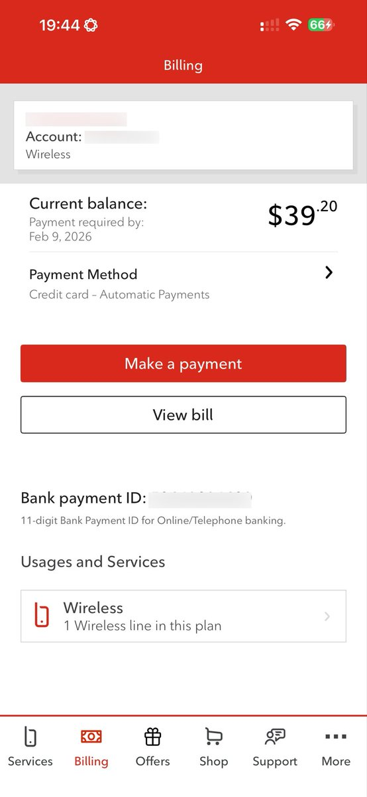
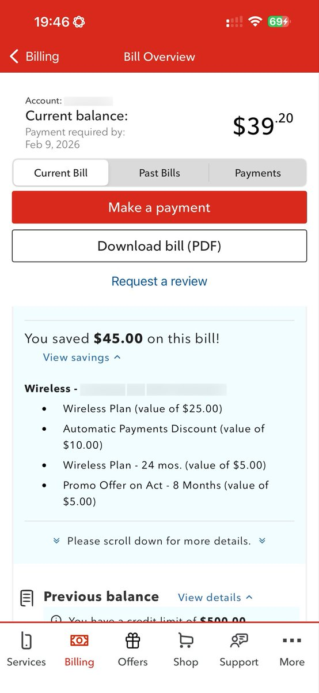

小虚空🍥
@tokerumaisurii
唯一缺点：高速的意思是限速250 Mbps，并非不限速，并非1 Gbps……但31.25 MBps假如能跑满也很舒服了，哪怕是出门外面全量下载一个大型二游都不会嫌弃太慢。


小虚空🍥
@tokerumaisurii
你好，只花三十九块二每月，我在用Rogers的60 GB高速流量套餐，每月减免的四十五块比我要付的都多。
这一切都要归功于BCAA（卑诗省汽车协会） GO级别的会员卡，每月四块多就可以得到这么便宜（相对而言）的套餐，得到这么多的减免，也归功于Fraser Valley Wireless这家授权经销商的搭桥促成。
好爽啊。 https://t.co/1xIf7cTKB9